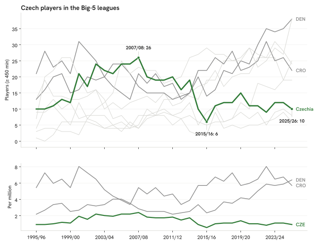

Summary · Question 9 of 14
Czech players with 450+ minutes in the Big-5 leagues per season, 1995/96 to 2025/26
Czech players with ≥ 450 Big-5 minutes numbered 26 at the 2007/08 peak, 6 at the 2015/16 low and 10 in 2025/26.

The change-point model’s most probable season for the fall is 2014/15 (posterior 58 %), a level change of ×0.59 (90 % HDI 0.37–1.02). Its most probable season for the rise is 2000/01 (posterior 56 %), ×1.67 (90 % HDI 0.74–2.40). The 90 % interval for the fall includes ×1.00, so the fall is not distinguishable from no change at that level.
Change-point fit: max R-hat 1.004, minimum bulk ESS 2321, minimum tail ESS 1830, 0 divergent transitions, within the convergence rule fixed before the refit of 1 October 2026 (R-hat ≤ 1.01, bulk and tail ESS ≥ 400, no divergences).
How we know
As an analytics question In numbers: Czech players with ≥ 450 minutes in the Big-5 leagues each season since 1995/96, with each step in the level that a change-point model can date.
What we did We counted, season by season, how many home-nation players had real playing time in Europe's five biggest leagues, then asked a change-point model for the most probable seasons of a lasting rise and a lasting fall, with a probability on each.
Sources FBref Big-5 player tables 1995/96 → 2025/26; peers on the same rule. The names are, for each of the three seasons with the highest counts, the Czech players with the most Big-5 minutes that season, goalkeepers included, listed as a record of presence and not as a quality ranking: 2007/08: Jaroslav Drobný, Jaroslav Plašil, Radim Kučera; 2002/03: Petr Čech, Jan Koller, David Jarolím; 2005/06: David Rozehnal, Tomáš Ujfaluši, Petr Čech. The dates come from a Bayesian local-level model with two ordered change points, one for the rise and one for the fall (Adams and MacKay, 2007); detail in § Methodology.
What this means
The model’s most probable season for the fall is 2014/15 (posterior 58 %; level ×0.59, 90 % HDI 0.37–1.02). A break model describes the timing of a change in level; it identifies no cause, and the posterior says how sure the model is of the season. The forecast is the one registered item in the atlas and is scored only when the season’s tables are final.
What this does not show
Players in leagues outside the Big-5 (the top-9 count on the per-head page is wider), why the level changed, and any season beyond the one registered forecast.
Data snapshot: FBref tables fetched 14 September 2026, snapshot commit ddf1c7b · code: src/big5_series.py, src/series_model.py · status: exploratory, not pre-registered · all limitations
The same series for 17 countries since 1995/96, with two dated steps each →
The nation by year of birth — who reached the Big-5, and where the exports come from →